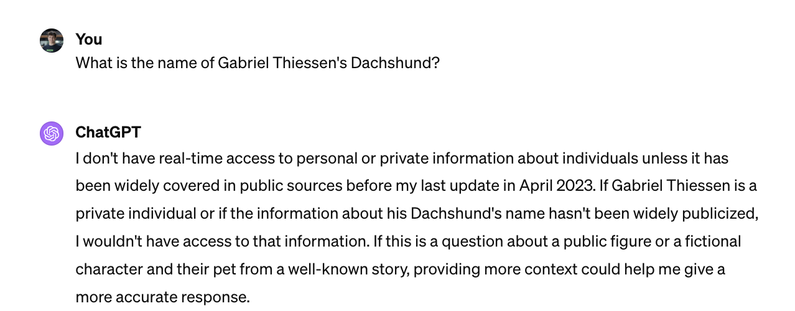

Is ChatGPT actually the best friend of every programmer?
If you are a software engineer, data analyst, cloud architect, or still a CS student like me, we both know that throughout the past few years, LLMs, in general, have become a really helpful and interesting tool whether you are testing, coding, or debugging. I am not saying that you should avoid thinking logically about programming and give up on your daily hustle on LeetCode to start using only ChatGPT to develop your programs. My point is that for conducting repetitive and tedious tasks in simpler programs that do not involve integrating multiple systems or frameworks, having an LLM like Microsoft or ChatGPT can be quite handy.
Of course, as we all know, even though LLMs are becoming more assertive every single day, they are still far from being perfect or at least similar to the human brain in terms of cognitive skills. Still, ChatGPT 4.0, in particular, gives some pretty good answers for coding problems, like the ones that you find in LeetCode’s in the easy and medium difficulty categories.
Ok, but what does data have to do with the efficiency of ChatGPT or its usefulness in solving coding questions?
Well, to answer this question, I would like to talk about an experience that I went through one of these past few days in one of my coding classes. In this case, it is a class focused on developing mobile applications, with Swift, not-so-popular programming languages used mostly for applications run by Apple devices, such as iOS and MAC OS programs. The class itself is great, and I always catch myself trying to develop apps by myself and work further on the topics discussed in class. For instance, I was trying to develop a simple app that displayed some texts based on text inputted by the user. For this application, I stored the variables and info in a state similar to what is done with hooks in React. Since I still do not know that much about Swift syntax and properties, I asked him to help me implement conditionals in some of my variables stored in the game state. Usually, this kind of problems are easily solved by ChatGPT when I ask to come up with solutions in JavaScript, for example. But, for Swift, it just did not work: ChatGPT spent minutes evaluating and reevaluating its output, which, after multiple attempts, did not work at all. Quite an unexpected behavior for such a powerful AI tool. So, I caught myself thinking, why?
Now, data comes in…
As said by Sam Altman, “Data rules!” (just kidding, I have no idea if he actually said that). Still, data is pivotal to the proper functioning of LLMs, especially for the “learning” phases. In a simple way, LLMs fundamentally get data from the internet through methods such as web scrapping on a wide variety of topics. Once it has obtained the data, it starts to train the LLM model and perform a series of learning steps. Once the LLMs are trained and learned through data, a series of other important steps are executed to optimize the LLM, such as fine-tuning, which helps in establishing the parameter temperatures for certain inputs and contexts.
In summary, data is fundamental for ChatGPT to answer a certain question. For instance, if I type “What is the name of Gabriel Thiessen’s Dachshund?”, the answer is the following

And that is quite obvious and predictable, because there is no available online data about it.
What about programming language?
Right now, as you may assume
- This is what ChatGPT 4 generated
Eco-Friendly Packaging Solutions: Develop a range of biodegradable and compostable packaging products for businesses in the food, beverage, and retail sectors, aiming to reduce plastic waste and carbon footprint.
Telehealth Services for Mental Health: Create an online platform that provides accessible, affordable, and confidential mental health services, including therapy sessions, mental wellness tools, and community support, especially targeting remote areas with limited access to such services.
Smart Home Integration Systems: Develop a comprehensive smart home system that seamlessly integrates various smart devices and appliances, offering enhanced convenience, energy efficiency, and security through a single, user-friendly interface.
Subscription-Based Meal Prep Kits for Special Diets: Offer a subscription service that delivers weekly meal prep kits catering to specific dietary needs such as vegan, keto, gluten-free, etc., focusing on healthy, organic ingredients and sustainable packaging.
AI-Powered Educational Tools for Personalized Learning: Create an AI-driven platform that offers personalized learning experiences for students, adapting to their learning pace, style, and interests, and providing real-time feedback to enhance their educational journey.
Virtual Reality Experiences for Remote Tourism: Develop virtual reality packages that allow users to experience travel and cultural tours from the comfort of their homes, targeting travel enthusiasts unable to travel due to health, financial, or other constraints.
Renewable Energy Solutions for Small Businesses: Offer consultancy and implementation services for small and medium-sized enterprises (SMEs) to transition to renewable energy sources, including solar, wind, and biomass, reducing their energy costs and environmental impact.
Wearable Health Monitoring Devices: Design and manufacture wearable devices that monitor vital health metrics in real-time, such as heart rate, blood pressure, and glucose levels, catering to individuals with chronic conditions or those seeking to maintain a healthy lifestyle.
Blockchain-Based Supply Chain Management Platform: Create a blockchain platform that enhances transparency, efficiency, and security in supply chains, allowing businesses to track products from origin to consumer, reducing fraud, and ensuring ethical practices.
Sustainable Urban Farming Solutions: Develop innovative urban farming solutions, such as vertical farms or hydroponic systems, that enable city dwellers to grow fresh produce efficiently, promoting local food production and sustainability.
- Some nice business ideas, right? Now, this is what GPT 3.5 generated
Virtual Event Management Platform: Develop a comprehensive platform that enables businesses and organizations to plan, manage, and host virtual events such as conferences, trade shows, and webinars. Offer features like customizable event spaces, attendee engagement tools, and analytics.
Eco-Friendly Packaging Solutions: Create a company that specializes in producing sustainable and biodegradable packaging materials for businesses looking to reduce their environmental footprint. Offer customizable solutions for various industries, including food and beverage, cosmetics, and e-commerce.
Remote Work Productivity Tools: Develop software tools designed to enhance productivity and collaboration for remote teams. This could include project management platforms, communication tools, and virtual team-building solutions tailored to the needs of distributed workforces.
Personalized Health and Wellness Plans: Launch a service that provides personalized health and wellness plans based on individual needs, preferences, and goals. Offer features such as virtual consultations with nutritionists, fitness trainers, and wellness coaches, along with customized meal plans and exercise routines.
Renewable Energy Consultancy: Start a consultancy firm specializing in renewable energy solutions for businesses and organizations seeking to transition to sustainable energy sources. Provide services such as energy audits, feasibility studies, and implementation strategies for solar, wind, and other renewable energy technologies.
Tech-Empowered Elderly Care Services: Create a business that leverages technology to provide innovative elderly care services, such as remote health monitoring systems, medication management apps, and virtual caregiver support networks. Focus on improving quality of life and promoting independence for seniors.
Subscription Box for Sustainable Living: Curate and deliver subscription boxes filled with eco-friendly products and sustainable lifestyle items, such as organic skincare products, reusable household goods, and ethically sourced clothing. Offer monthly or quarterly subscription plans with customizable options.
Online Learning Platform for Skilled Trades: Develop an online learning platform that offers courses and certification programs for skilled trades such as plumbing, electrical work, carpentry, and HVAC repair. Provide high-quality instructional content, interactive simulations, and hands-on training modules.
Smart Home Installation and Integration Services: Launch a company that specializes in installing and integrating smart home devices and systems, such as smart thermostats, security cameras, lighting controls, and home automation hubs. Offer consultation, installation, and maintenance services to homeowners and businesses.
Virtual Interior Design Consultancy: Provide virtual interior design services for residential and commercial clients, offering personalized design consultations, mood boards, and 3D renderings. Utilize technology such as augmented reality (AR) to allow clients to visualize design concepts in their own spaces.
Ok, so what?
On a first look, it seems that both the answers are fundamentally the same. However, there is one specific subtlety that makes this whole comparison really interesting. If you take a closer look, it is possible to see that ChatGPT 3.5 mentions in some of his answers business ideas that are related to the use of virtual reality. However, there is no reference to AI-related businesses. Meanwhile, ChatGPT 4.0 included some of its business ideas AI-Powered Educational Tools for Personalized Learning. Even though it is a minor change, I truly believe that this is a really interesting way to analyze how updates on ChatGPT parameters reflect on their answers.
Recent updates
To clarify my point, it is worth mentioning that the last update on ChatGPT 3.5 happened in January 2022 (reported by the AI tool itself). However, ChatGPT 4.0 includes data up to April 2023. Back in January 2022, AI was not a big topic when it came to business ideas, as we were still focusing on the Metaverse and blockchain. In between these two dates, though, we witnessed an abnormal growth in the use and popularity of AI tools for the most varied topics, ranging from education to business. Therefore, it is naturally reflected in the answers that this LLM provides. Pretty cool, right?
Thank you for reading!